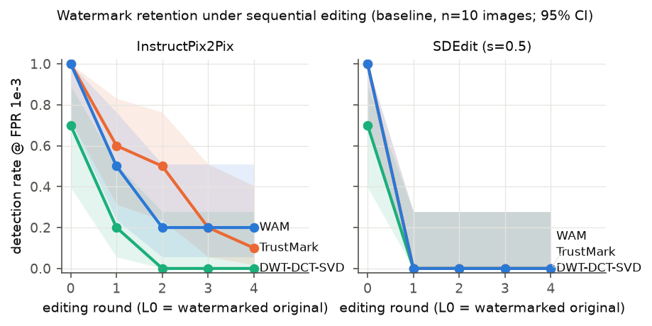
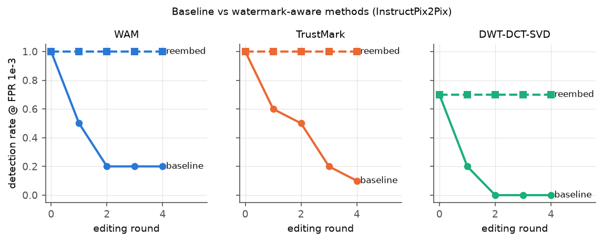
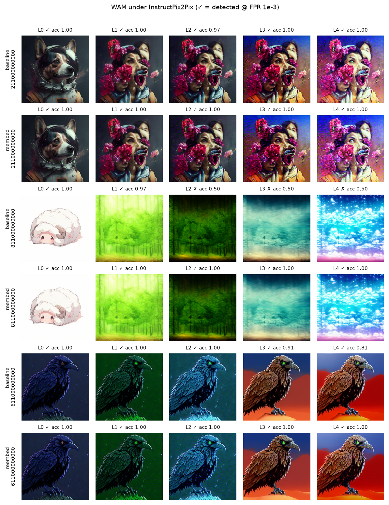
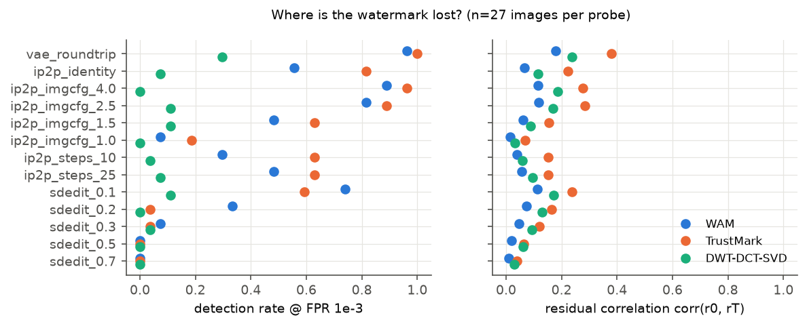
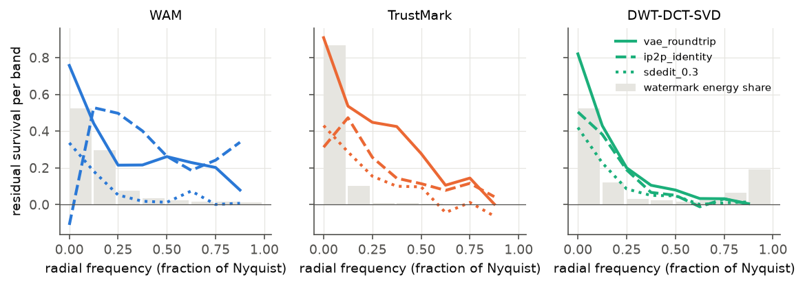

<title>Watermark Retention Study</title>
<link rel="preconnect" href="https://fonts.googleapis.com"><link rel="preconnect" href="https://fonts.gstatic.com" crossorigin>
<link rel="stylesheet" href="https://fonts.googleapis.com/css2?family=IBM+Plex+Sans+Condensed:wght@500;600&family=IBM+Plex+Sans:wght@400;500;600&family=IBM+Plex+Mono:wght@400;500&display=swap">
<style>
:root{--bg:#f6f7f5;--panel:#ffffff;--ink:#1b2129;--ink2:#56606b;--rule:#dde1dc;--accent:#2a78d6;--warn:#a35b00;--warnbg:#fff1dc;--ok:#1d7a4f;--okbg:#e3f4ea;--bad:#b3261e;--badbg:#fbe5e3;--heat:42,120,214}
@media (prefers-color-scheme:dark){:root:not([data-theme="light"]){color-scheme:dark;--bg:#12161b;--panel:#1a2027;--ink:#e6eaee;--ink2:#9aa5b1;--rule:#2b333c;--accent:#5a9ef0;--warn:#f0b35c;--warnbg:#3a2a12;--ok:#5fcf98;--okbg:#14321f;--bad:#f28b82;--badbg:#3b1715;--heat:90,158,240}}
:root[data-theme="dark"]{color-scheme:dark;--bg:#12161b;--panel:#1a2027;--ink:#e6eaee;--ink2:#9aa5b1;--rule:#2b333c;--accent:#5a9ef0;--warn:#f0b35c;--warnbg:#3a2a12;--ok:#5fcf98;--okbg:#14321f;--bad:#f28b82;--badbg:#3b1715;--heat:90,158,240}
body{background:var(--bg);color:var(--ink);font:15px/1.6 "IBM Plex Sans",system-ui,sans-serif;padding-inline:20px;padding-block:28px 64px}
main{max-width:1000px;margin:0 auto;display:grid;gap:44px}
h1,h2{font-family:"IBM Plex Sans Condensed","IBM Plex Sans",sans-serif;text-wrap:balance;margin:0}
h1{font-size:2.1rem;line-height:1.15;font-weight:600} h2{font-size:1.45rem;font-weight:600;margin-bottom:6px}
.eyebrow{font:500 .75rem "IBM Plex Mono",monospace;letter-spacing:.08em;text-transform:uppercase;color:var(--ink2)}
.lede,p{max-width:68ch;color:var(--ink2);margin:.3em 0 1em}
header{display:grid;gap:10px;border-bottom:1px solid var(--rule);padding-bottom:22px}
.kpis{display:grid;grid-template-columns:repeat(auto-fit,minmax(210px,1fr));gap:12px}
.kpi{background:var(--panel);border:1px solid var(--rule);border-radius:6px;padding:14px 16px;display:grid;gap:4px}
.kpi b{font:500 1.7rem "IBM Plex Mono",monospace;font-variant-numeric:tabular-nums}
.kpi span{color:var(--ink2);font-size:.88rem;line-height:1.4}
.pill{display:inline-block;font:500 .72rem "IBM Plex Mono",monospace;padding:2px 8px;border-radius:99px;margin-left:6px;vertical-align:middle}
.warn{background:var(--warnbg);color:var(--warn)} .ok{background:var(--okbg);color:var(--ok)} .bad{background:var(--badbg);color:var(--bad)}
.findings{margin:0 0 14px;padding-left:1.1em;max-width:72ch;display:grid;gap:6px}
.tbl{overflow-x:auto;border:1px solid var(--rule);border-radius:6px;background:var(--panel);margin:12px 0}
table{border-collapse:collapse;width:100%;font-size:.86rem}
th{font:500 .72rem "IBM Plex Mono",monospace;letter-spacing:.04em;text-transform:uppercase;color:var(--ink2);text-align:left;padding:8px 10px;border-bottom:1px solid var(--rule);white-space:nowrap}
td{padding:6px 10px;border-bottom:1px solid var(--rule);white-space:nowrap} tr:last-child td{border-bottom:0}
td.num{font-family:"IBM Plex Mono",monospace;font-variant-numeric:tabular-nums;text-align:right}
td.heat{background:rgba(var(--heat),calc(var(--v)*.38))}
.plate{margin:14px 0;background:#fff;border:1px solid var(--rule);border-radius:6px;padding:12px}
.plate img{display:block;width:100%;height:auto}
figcaption{color:#56606b;font-size:.82rem;margin-top:6px}
.status{display:grid;gap:8px} .row{display:flex;flex-wrap:wrap;gap:8px 16px;align-items:baseline;border-bottom:1px solid var(--rule);padding-bottom:8px}
.row code{font-family:"IBM Plex Mono",monospace}
.note{border-left:3px solid var(--warn);padding:4px 0 4px 14px;max-width:72ch}
</style>
<main>
<header>
<div class="eyebrow">Research progress · generated 02 Oct 2026, 02:15 from experiment outputs</div>
<h1>Do invisible watermarks survive repeated text-based image edits?</h1>
<p class="lede">We watermark PIE-Bench++ photos with three post-hoc watermarks, edit them four times in a row with
InstructPix2Pix and SDEdit, and decode after every round (L0 = watermarked original, L1–L4 = after each edit).
Detection is a one-sided binomial test at a false-positive rate of 1 in 1,000.</p>
</header>

<section class="kpis" aria-label="Headline results">
<div class="kpi"><b>20% / 10%</b><span>WAM / TrustMark still detected after 4 InstructPix2Pix edits, plain editing (pilot, n=10)</span></div>
<div class="kpi"><b>0%</b><span>of watermarks survive one SDEdit pass (strength 0.5) with plain editing, no protection</span></div>
<div class="kpi"><b>100%</b><span>of the watermarks detectable before editing are still detected after every round with decode → edit → re-embed (worst editor/watermark pair)</span></div>
<div class="kpi"><b>0/300</b><span>false alarms on unwatermarked images (all detectors, rounds, editors)</span></div>
</section>

<section><h2>Retention over four edits</h2>
<p class="lede">Pilot, 10 images, 4 rounds. Shaded bands are 95% Wilson intervals; with n=10 they are wide.
<span class="pill warn">pilot · underpowered</span></p>
<figure class="plate"><figcaption>Detection rate per editing round, baseline editing.</figcaption></figure>
<div class="tbl"><table><thead><tr><th>editor</th><th>method</th><th>watermark</th><th>L0</th><th>L1</th><th>L2</th><th>L3</th><th>L4</th></tr></thead><tbody><tr><td>InstructPix2Pix</td><td>baseline</td><td>DWT-DCT-SVD</td><td class="num heat" style="--v:0.700">0.70</td><td class="num heat" style="--v:0.200">0.20</td><td class="num heat" style="--v:0.000">0.00</td><td class="num heat" style="--v:0.000">0.00</td><td class="num heat" style="--v:0.000">0.00</td></tr><tr><td>InstructPix2Pix</td><td>baseline</td><td>TrustMark</td><td class="num heat" style="--v:1.000">1.00</td><td class="num heat" style="--v:0.600">0.60</td><td class="num heat" style="--v:0.500">0.50</td><td class="num heat" style="--v:0.200">0.20</td><td class="num heat" style="--v:0.100">0.10</td></tr><tr><td>InstructPix2Pix</td><td>baseline</td><td>WAM</td><td class="num heat" style="--v:1.000">1.00</td><td class="num heat" style="--v:0.500">0.50</td><td class="num heat" style="--v:0.200">0.20</td><td class="num heat" style="--v:0.200">0.20</td><td class="num heat" style="--v:0.200">0.20</td></tr><tr><td>InstructPix2Pix</td><td>reembed</td><td>DWT-DCT-SVD</td><td class="num heat" style="--v:0.700">0.70</td><td class="num heat" style="--v:0.700">0.70</td><td class="num heat" style="--v:0.700">0.70</td><td class="num heat" style="--v:0.700">0.70</td><td class="num heat" style="--v:0.700">0.70</td></tr><tr><td>InstructPix2Pix</td><td>reembed</td><td>TrustMark</td><td class="num heat" style="--v:1.000">1.00</td><td class="num heat" style="--v:1.000">1.00</td><td class="num heat" style="--v:1.000">1.00</td><td class="num heat" style="--v:1.000">1.00</td><td class="num heat" style="--v:1.000">1.00</td></tr><tr><td>InstructPix2Pix</td><td>reembed</td><td>WAM</td><td class="num heat" style="--v:1.000">1.00</td><td class="num heat" style="--v:1.000">1.00</td><td class="num heat" style="--v:1.000">1.00</td><td class="num heat" style="--v:1.000">1.00</td><td class="num heat" style="--v:1.000">1.00</td></tr><tr><td>SDEdit s=0.5</td><td>baseline</td><td>DWT-DCT-SVD</td><td class="num heat" style="--v:0.700">0.70</td><td class="num heat" style="--v:0.000">0.00</td><td class="num heat" style="--v:0.000">0.00</td><td class="num heat" style="--v:0.000">0.00</td><td class="num heat" style="--v:0.000">0.00</td></tr><tr><td>SDEdit s=0.5</td><td>baseline</td><td>TrustMark</td><td class="num heat" style="--v:1.000">1.00</td><td class="num heat" style="--v:0.000">0.00</td><td class="num heat" style="--v:0.000">0.00</td><td class="num heat" style="--v:0.000">0.00</td><td class="num heat" style="--v:0.000">0.00</td></tr><tr><td>SDEdit s=0.5</td><td>baseline</td><td>WAM</td><td class="num heat" style="--v:1.000">1.00</td><td class="num heat" style="--v:0.000">0.00</td><td class="num heat" style="--v:0.000">0.00</td><td class="num heat" style="--v:0.000">0.00</td><td class="num heat" style="--v:0.000">0.00</td></tr><tr><td>SDEdit s=0.5</td><td>reembed</td><td>DWT-DCT-SVD</td><td class="num heat" style="--v:0.700">0.70</td><td class="num heat" style="--v:0.700">0.70</td><td class="num heat" style="--v:0.700">0.70</td><td class="num heat" style="--v:0.700">0.70</td><td class="num heat" style="--v:0.700">0.70</td></tr><tr><td>SDEdit s=0.5</td><td>reembed</td><td>TrustMark</td><td class="num heat" style="--v:1.000">1.00</td><td class="num heat" style="--v:1.000">1.00</td><td class="num heat" style="--v:1.000">1.00</td><td class="num heat" style="--v:1.000">1.00</td><td class="num heat" style="--v:1.000">1.00</td></tr><tr><td>SDEdit s=0.5</td><td>reembed</td><td>WAM</td><td class="num heat" style="--v:1.000">1.00</td><td class="num heat" style="--v:1.000">1.00</td><td class="num heat" style="--v:1.000">1.00</td><td class="num heat" style="--v:1.000">1.00</td><td class="num heat" style="--v:1.000">1.00</td></tr></tbody></table></div>
</section>

<section><h2>A trivial fix already works</h2>
<p class="lede">Decoding the payload from the input, editing, then embedding the same payload into the output keeps
detection at its starting level in every round. In the pilot this costs no visible edit quality.</p>
<figure class="plate"><figcaption>Baseline vs decode → edit → re-embed, InstructPix2Pix.</figcaption></figure>
<p class="note">Consequence: a "watermark-aware editor" that steers the edit with the watermark decoder needs the decoder inside
the editor, and whoever has the decoder for these watermarks has the encoder too. Our guided editor is therefore being
tested against re-embedding, not presented as the contribution.</p>
</section>

<section><h2>Edit quality</h2>
<p class="lede">Mean over rounds 1–4. <em>edit success</em> = the image moved toward the target caption in CLIP space
(directional and absolute), as fixed in the pre-registration. <code>none</code> is the editor on the unwatermarked image.</p>
<div class="tbl"><table><thead><tr><th>editor</th><th>method</th><th>watermark</th><th>edit_success</th><th>clip_dir</th><th>dino</th><th>lpips</th></tr></thead><tbody><tr><td>InstructPix2Pix</td><td>baseline</td><td>DWT-DCT-SVD</td><td class="num">0.625</td><td class="num">0.130</td><td class="num">0.777</td><td class="num">0.283</td></tr><tr><td>InstructPix2Pix</td><td>baseline</td><td>none (B0)</td><td class="num">0.675</td><td class="num">0.113</td><td class="num">0.814</td><td class="num">0.274</td></tr><tr><td>InstructPix2Pix</td><td>baseline</td><td>TrustMark</td><td class="num">0.600</td><td class="num">0.138</td><td class="num">0.776</td><td class="num">0.298</td></tr><tr><td>InstructPix2Pix</td><td>baseline</td><td>WAM</td><td class="num">0.575</td><td class="num">0.125</td><td class="num">0.749</td><td class="num">0.296</td></tr><tr><td>InstructPix2Pix</td><td>reembed</td><td>DWT-DCT-SVD</td><td class="num">0.550</td><td class="num">0.122</td><td class="num">0.776</td><td class="num">0.296</td></tr><tr><td>InstructPix2Pix</td><td>reembed</td><td>TrustMark</td><td class="num">0.525</td><td class="num">0.131</td><td class="num">0.792</td><td class="num">0.291</td></tr><tr><td>InstructPix2Pix</td><td>reembed</td><td>WAM</td><td class="num">0.500</td><td class="num">0.103</td><td class="num">0.745</td><td class="num">0.306</td></tr><tr><td>SDEdit s=0.5</td><td>baseline</td><td>DWT-DCT-SVD</td><td class="num">0.675</td><td class="num">0.075</td><td class="num">0.832</td><td class="num">0.334</td></tr><tr><td>SDEdit s=0.5</td><td>baseline</td><td>none (B0)</td><td class="num">0.550</td><td class="num">0.059</td><td class="num">0.830</td><td class="num">0.331</td></tr><tr><td>SDEdit s=0.5</td><td>baseline</td><td>TrustMark</td><td class="num">0.650</td><td class="num">0.072</td><td class="num">0.820</td><td class="num">0.333</td></tr><tr><td>SDEdit s=0.5</td><td>baseline</td><td>WAM</td><td class="num">0.625</td><td class="num">0.072</td><td class="num">0.830</td><td class="num">0.328</td></tr><tr><td>SDEdit s=0.5</td><td>reembed</td><td>DWT-DCT-SVD</td><td class="num">0.600</td><td class="num">0.054</td><td class="num">0.829</td><td class="num">0.345</td></tr><tr><td>SDEdit s=0.5</td><td>reembed</td><td>TrustMark</td><td class="num">0.625</td><td class="num">0.073</td><td class="num">0.823</td><td class="num">0.328</td></tr><tr><td>SDEdit s=0.5</td><td>reembed</td><td>WAM</td><td class="num">0.650</td><td class="num">0.059</td><td class="num">0.826</td><td class="num">0.335</td></tr></tbody></table></div>
<div class="tbl"><table><thead><tr><th>watermark</th><th>wm_psnr</th><th>wm_ssim</th></tr></thead><tbody><tr><td>DWT-DCT-SVD</td><td class="num">40.0</td><td class="num">0.988</td></tr><tr><td>TrustMark</td><td class="num">42.6</td><td class="num">0.991</td></tr><tr><td>WAM</td><td class="num">39.6</td><td class="num">0.981</td></tr></tbody></table></div>
<figure class="plate"><figcaption>WAM under InstructPix2Pix: baseline and re-embed rows for three images (chosen by rule: first image of three categories).</figcaption></figure>
</section>

<section id="probes"><h2>Where the watermark is lost</h2>
<p class="lede">Each probe applies one piece of the editing pipeline to the watermarked original and decodes again.
</p>
<ul class="findings">
<li>The SD-1.5 VAE alone (encode → decode, no diffusion) keeps WAM detectable on 96% and TrustMark on 100% of images, but DWT-DCT-SVD on only 30%.</li>
<li>An InstructPix2Pix edit told to <em>keep the image unchanged</em> already drops WAM to 56% and TrustMark to 81%. The diffusion regeneration step, not the requested change, does most of the damage for the neural watermarks.</li>
<li>Image guidance (how strongly InstructPix2Pix sticks to its input) is effectively the watermark dial: at 1.0, WAM survives on 7% and TrustMark on 19%; at 4.0, on 89% and 96%.</li>
<li>SDEdit has a sharp threshold: at noise strength 0.1, WAM survives on 74%; at 0.3, on 7%; from 0.5, on 0%, with no change to the prompt.</li>
<li>The VAE keeps the low-frequency part of the watermark residual and loses the rest. TrustMark puts 87% of its residual energy in the lowest frequency band (WAM 52%, DWT-DCT-SVD 53%), which matches its robustness to the VAE.</li>
</ul>
<div class="tbl"><table><thead><tr><th>probe</th><th>images</th><th>DWT-DCT-SVD</th><th>TrustMark</th><th>WAM</th></tr></thead><tbody><tr><td>vae_roundtrip</td><td class="num">27</td><td class="num heat" style="--v:0.296">0.296</td><td class="num heat" style="--v:1.000">1.000</td><td class="num heat" style="--v:0.963">0.963</td></tr><tr><td>ip2p_identity</td><td class="num">27</td><td class="num heat" style="--v:0.074">0.074</td><td class="num heat" style="--v:0.815">0.815</td><td class="num heat" style="--v:0.556">0.556</td></tr><tr><td>ip2p_imgcfg_4.0</td><td class="num">27</td><td class="num heat" style="--v:0.000">0.000</td><td class="num heat" style="--v:0.963">0.963</td><td class="num heat" style="--v:0.889">0.889</td></tr><tr><td>ip2p_imgcfg_2.5</td><td class="num">27</td><td class="num heat" style="--v:0.111">0.111</td><td class="num heat" style="--v:0.889">0.889</td><td class="num heat" style="--v:0.815">0.815</td></tr><tr><td>ip2p_imgcfg_1.5</td><td class="num">27</td><td class="num heat" style="--v:0.111">0.111</td><td class="num heat" style="--v:0.630">0.630</td><td class="num heat" style="--v:0.481">0.481</td></tr><tr><td>ip2p_imgcfg_1.0</td><td class="num">27</td><td class="num heat" style="--v:0.000">0.000</td><td class="num heat" style="--v:0.185">0.185</td><td class="num heat" style="--v:0.074">0.074</td></tr><tr><td>ip2p_steps_25</td><td class="num">27</td><td class="num heat" style="--v:0.074">0.074</td><td class="num heat" style="--v:0.630">0.630</td><td class="num heat" style="--v:0.481">0.481</td></tr><tr><td>ip2p_steps_10</td><td class="num">27</td><td class="num heat" style="--v:0.037">0.037</td><td class="num heat" style="--v:0.630">0.630</td><td class="num heat" style="--v:0.296">0.296</td></tr><tr><td>sdedit_0.1</td><td class="num">27</td><td class="num heat" style="--v:0.111">0.111</td><td class="num heat" style="--v:0.593">0.593</td><td class="num heat" style="--v:0.741">0.741</td></tr><tr><td>sdedit_0.2</td><td class="num">27</td><td class="num heat" style="--v:0.000">0.000</td><td class="num heat" style="--v:0.037">0.037</td><td class="num heat" style="--v:0.333">0.333</td></tr><tr><td>sdedit_0.3</td><td class="num">27</td><td class="num heat" style="--v:0.037">0.037</td><td class="num heat" style="--v:0.037">0.037</td><td class="num heat" style="--v:0.074">0.074</td></tr><tr><td>sdedit_0.5</td><td class="num">27</td><td class="num heat" style="--v:0.000">0.000</td><td class="num heat" style="--v:0.000">0.000</td><td class="num heat" style="--v:0.000">0.000</td></tr><tr><td>sdedit_0.7</td><td class="num">27</td><td class="num heat" style="--v:0.000">0.000</td><td class="num heat" style="--v:0.000">0.000</td><td class="num heat" style="--v:0.000">0.000</td></tr></tbody></table></div>
<figure class="plate"><figcaption>Detection rate and residual correlation per probe.</figcaption></figure>
<figure class="plate"><figcaption>Fraction of the watermark residual surviving per radial frequency band (lines) and where its energy sits (grey bars).</figcaption></figure>
</section>
<section class="status"><h2>Runs</h2>
<div class="row"><code>pilot</code><span>560 edited images on disk</span><span class="pill ok">evaluated</span></div><div class="row"><code>probes</code><span>0 edited images on disk</span><span class="pill warn">running</span></div><div class="row"><code>guided_test</code><span>533 edited images on disk</span><span class="pill warn">running</span></div><div class="row"><code>stage2</code><span>2422 edited images on disk</span><span class="pill warn">running</span></div>
<p>Stage 2 (90 images, 10 per PIE-Bench++ category) runs on an NVIDIA L4; the guided-editing test (18 held-out images) and the
forgery test run on an RTX 3060. This page is rebuilt from their outputs when they finish.</p>
</section>
</main>